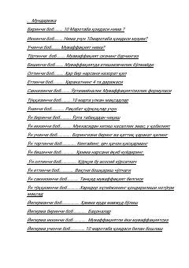

1MUlkan muvaffaqiyatlarga erishish uchun oddiydan o'n barobar ko'proq harakat qiling.
Ushbu kitob har qanday maqsadga erishish uchun odatdagidan o'n barobar ko'proq harakat qilish va fikrlash kerakligini o'rgatadi. Grant Kardone muvaffaqiyat kafolati bo'lgan 10 marta qoidasi orqali qo'rquvni yengish, ulkan maqsadlar qo'yish va ularga erishish sirlarini ochib beradi.